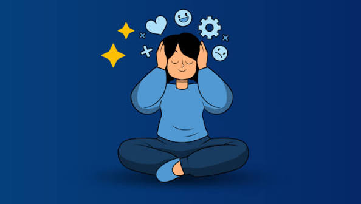

สุขภาพจิต
สุขภาพจิตเป็นส่วนสำคัญของสุขภาพโดยรวมของมนุษย์ ไม่ได้หมายถึงเพียงการไม่มีความผิดปกติทางจิตเท่านั้น แต่ยังหมายถึงการมีสภาพจิตใจที่เหมาะสม สามารถจัดการกับอารมณ์และความเครียด สามารถปรับตัวเข้ากับสถานการณ์ต่าง ๆ และสามารถใช้ชีวิตร่วมกับผู้อื่นในสังคมได้อย่างเหมาะสม สุขภาพจิตที่ดีช่วยให้บุคคลมีความมั่นใจในการดำเนินชีวิต มีสมาธิในการเรียนหรือทำงาน และสามารถแก้ไขปัญหาต่าง ๆ ได้อย่างมีเหตุผล ในชีวิตประจำวัน โดยเฉพาะในช่วงวัยเรียน นักเรียนอาจพบกับความเครียดจากหลายด้าน เช่น การเรียน การสอบ การทำงานที่ได้รับมอบหมาย ความคาดหวังของครอบครัว หรือความสัมพันธ์กับเพื่อน หากไม่สามารถจัดการกับความเครียดได้อย่างเหมาะสม อาจส่งผลต่ออารมณ์ การเรียน การนอนหลับ และการใช้ชีวิตประจำวันได้ การดูแลสุขภาพจิตสามารถทำได้หลายวิธี เช่น จัดสรรเวลาในการเรียนและพักผ่อนให้เหมาะสม ออกกำลังกาย ทำกิจกรรมที่ชื่นชอบ พูดคุยกับครอบครัวหรือเพื่อนเมื่อมีปัญหา และไม่เก็บความรู้สึกหรือปัญหาไว้เพียงคนเดียว นอกจากนี้ควรยอมรับว่าการรู้สึกเครียด เศร้า หรือกังวลเป็นสิ่งที่เกิดขึ้นได้ และหากรู้สึกว่าปัญหามีผลต่อการใช้ชีวิตมาก ควรขอคำปรึกษาจากผู้ใหญ่ที่ไว้ใจหรือผู้เชี่ยวชาญ